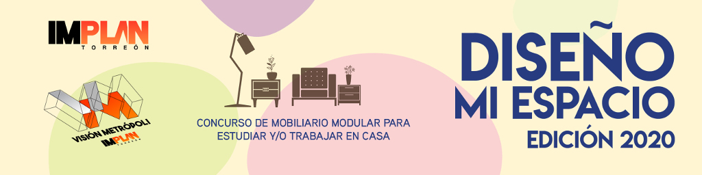

DISEÑO MI ESPACIO - Edición 2020
Como una de las medidas reactivas para disminuir los contagios por el COVID-19, la iniciativa privada y pública han establecido la modalidad de estudio y trabajo en casa hasta donde sea posible. Enfrentando así a la sociedad a un cambio de paradigma en el que actividades laborales y académicas antes eran realizadas en espacios específicamente diseñados para ello, y ahora deben hacerse en casa, rodeados de miembros familiares en condiciones similares.
Es por esto que, el Instituto Municipal de Planeación y Competitividad de Torreón(IMPLAN), y su Consejo Juvenil, Visión Metrópoli.
C O N V O C A N
A todos los alumnos de Arquitectura, Diseño de Interiores, Diseño Industrial y similares, artistas y, ciudadanos en general de la Zona Metropolitana de La Laguna, a participar en el 1er. Concurso Metropolitano de diseño de mobiliario modular para usuarios en confinamiento; “Diseño Mi Espacio” en su edición 2020.
Antecedentes:
En diciembre del 2019 se detectó un nuevo virus denominado COVID-19, el cual se extendió por todo el mundo y la Organización Mundial de la Salud (OMS) declaró una pandemia global en rueda de prensa el 11 de marzo del 2020.
El 30 de marzo del 2020, se declaró emergencia sanitaria a nivel nacional en México, suspendiendo las actividades no esenciales de los sectores públicos y privados.
A consecuencia de ello, y como una forma de mantenerse en funcionamiento a la par del cumplimiento de las medidas de seguridad, instituciones educativas, así como empresas con actividades consideradas no esenciales, adoptaron el resguardo domiciliario.
Bajo los términos Home-Office, Home-School y #QuédateEnCasa estudiantes y trabajadores han debido adaptarse a un modelo de actividades primordialmente en línea, para no suspender por completo sus procesos.
En el caso del sector educativo, se presentó de manera tentativa el 1 de junio como la fecha de regreso a las escuelas en todo el país. Después de dos meses en confinamiento, los gobiernos de Coahuila y Durango anunciaron, el 12 y el 14 de mayo respectivamente, que el ciclo escolar se terminará a distancia, sin regreso a las aulas.
Objeto del Concurso
El concurso “Diseño Mi Espacio” ha sido creado con la finalidad de hacer más ameno el periodo de contingencia sanitaria y facilitar las condiciones de trabajo y/o estudio en casa, reconociendo el nuevo esquema que nos obliga a repensar el uso de los espacios y de los mobiliarios que hay en casa, no necesariamente adaptados a actividades con fines laborales y/o académicos.
Premiación
1 paquete de colores Prismacolor con 150 tonos diferentes con valor de $2,500.00 mxn al proyecto ganador del concurso.
1 paquete de colores Prismacolor con 150 tonos diferentes con valor de $2,500.00 mxn al proyecto denominado como el favorito del público.
Todos los concursantes recibirán reconocimiento de participación.
Adicionalmente, todos los proyectos serán promovidos en las redes sociales del Consejo Visión Metrópoli, IMPLAN Torreón, así como otros medios de comunicación.
BASES
¿Quiénes participan?
A todos los alumnos de Arquitectura, Diseño de Interiores, Diseño Industrial y similares, artistas y, ciudadanos en general de la Zona Metropolitana de La Laguna.
Estar debidamente inscrito en tiempo y forma en el concurso, según fechas publicadas en esta convocatoria.
Proceso de Inscripción
Habrá que inscribirse en la siguiente liga: bit.ly/RegistroDisenoMiEspacio (respetar mayúsculas y minúsculas para poder acceder a la liga). Los proyectos tendrán la posibilidad de ser postulados de forma individual, en parejas, o triadas.
Dentro del registro habrá que especificar:
Participante(s) y la Institución/Empresa que se representa (si aplica)
En caso de ser equipos de 2 o 3 integrantes, habrá que nombrar a un representante con el cual se tendrá contacto directo durante todo el concurso.
Los datos a registrar son:
Nombre Completo
Correo electrónico (indispensable)
Número de celular
Al momento de inscribirse, habrá que nombrar el proyecto
Una vez hecho este registro en forma y tiempo, se notificará vía correo electrónico que la inscripción fue exitosa y se asignará un folio con el cual serán identificados el resto del concurso. Igualmente, en este correo, se anexará una liga donde podrán subir los entregables especificados.
Lineamientos del Diseño
El diseño del mobiliario estará dado por una justificación compuesta de los siguientes elementos.
Mobiliario modular estandarizable -cualquier tipo de mobiliario de oficina o escuela-,
Debe estar pensado con materiales disponibles en la región,
Su reproducción deberá ser posible con herramientas accesibles para la ciudadanía en general,
Concepto basado en aspectos de la Zona Metropolitana de La Laguna (gastronomía, fauna, flora, arte, arquitectura, etc.),
Estimado de costos de reproducción.
Entregables
1) Lámina (PDF) de 90 x 60 cm que incluya:
- Justificación del concepto.
- Plano (s) en planta y alzado con acotaciones.
- Render (representación ilustrativa tridimensional y/o isométrica).
- Instrucciones de corte y armado.
- Estimado de costos de reproducción
2) Versión en A4 (tamaño carta) del mismo contenido, editable.
3) Fotografía(s) de Maqueta -material y escala libre (máximo 3)
4) Video que la maqueta
Programación de fechas para el concurso
Lunes, 25 de mayo: Se lanza la convocatoria y se abre el periodo de registro;
Viernes, 5 de junio: A las 12:00 del mediodía se cierra el periodo de registro de concursantes;
Viernes, 12 de junio: A las 12:00 del mediodía se cierra la recepción de proyectos;
Lunes, 15 de junio: Inicia la dinámica en redes sociales para que el público vote por su propuesta favorita a las 12:00 del mediodía;
Viernes, 19 de junio: A las 12:00 del mediodía se cierran las votaciones en redes sociales del segundo proyecto ganador, el favorito del público;
Martes, 23 de junio: Se dan a conocer los proyectos ganadores; el determinado por los jueces, y el favorito del público.
Evaluación
Criterios
Concepto:
Relación con aspectos identitarios de la Zona Metropolitana de La Laguna.
Funcionalidad:
Adecuabilidad para trabajar/estudiar en casa,
Modular, adaptable a espacios de diferentes dimensiones,
Ergonomía,
Modelo a escala (maqueta).
Presentación:
Diseño de las láminas,
Fotografía(s) de modelo a escala,
Video.
Costo:
Reproducción económica (materiales y herramientas accesibles),
Uso (opcional) de material reciclable.
* No entregar en tiempo y forma es causa automática de descalificación.
Jurado
El jurado estará conformado por profesionistas especializados en las áreas de arquitectura, interiorismo, diseño industrial y arte en la Zona Metropolitana de La Laguna.
Será el propio jurado y miembros del Consejo Visión Metrópoli quienes establezcan el método de evaluación, misma rúbrica que se entregará a los participantes al momento de su registro.
En caso de empate, el jurado deliberará cuál es el equipo ganador. El fallo del jurado para designar al ganador, será inapelable.
Favorito del Público
El Favorito del público será determinado a través de una dinámica de likes en redes sociales. Todos los proyectos serán publicados en redes sociales del Consejo Visión Metrópoli antes del fallo del jurado. Los concursantes que lo deseen podrán invitar a amigos y conocidos a votar por su proyecto. El proyecto con mayor número de likes a la fecha determinada para el conteo de votos, será el ganador.
Derechos y Propiedad Intelectual
La información resultante del concurso será propiedad del IMPLAN y éste podrá reproducirla, distribuirla y comunicarla libremente.
Cualquier observación no prevista en la convocatoria, el Comité Organizador es el encargado de su resolución..